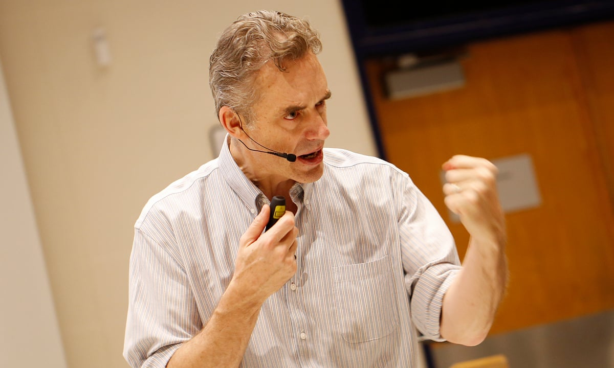

a Canadian clinical psychologist and a professor of psychology at the University of Toronto.
Here's a time line of Dr. Borlaug's life:
1914 - Born in Cresco, Iowa
1933 - Leaves his family's farm to attend the
University of Minnesota, thanks to a Depression era program known as the
"National Youth Administration"
1935 - Has to stop school and save up more money. Works
in the Civilian Conservation Corps, helping starving Americans. "I saw
how food changed them", he said. "All of this left scars on me."
1937 - Finishes university and takes a job in the US
Forestry Service
1938 - Marries wife of 69 years Margret Gibson. Gets
laid off due to budget cuts. Inspired by Elvin Charles Stakman, he
returns to school study under Stakman, who teaches him about breeding
pest-resistent plants.
1941 - Tries to enroll in the military after the Pearl
Harbor attack, but is rejected. Instead, the military asked his lab to
work on waterproof glue, DDT to control malaria, disinfectants, and
other applied science.
1942 - Receives a Ph.D. in Genetics and Plant Pathology
1944 - Rejects a 100% salary increase from Dupont,
leaves behind his pregnant wife, and flies to Mexico to head a new plant
pathology program. Over the next 16 years, his team breeds 6,000
different strains of disease resistent wheat - including different
varieties for each major climate on Earth.